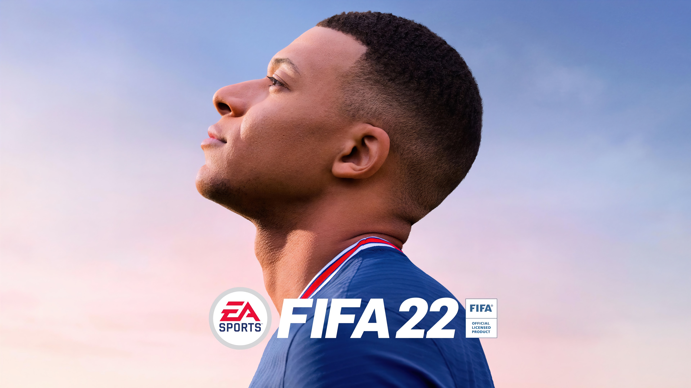

FIFA es una saga de videojuegos de fútbol en la que se puede hacer variedad de cosas, como jugar contra
la IA o contra tus amigos, ya sea en el mismo sitio o cada uno desde su casa. El modo de juego que más
juego a día de hoy es el "Ultimate Team", el cual son cartas de jugadores y tienes que hacerte tu equipo
con estas cartas que te van saliendo en diferentes paquetes o sobres que vayas obteniendo, para después cada
fin de semana jugar el "Fut Champions" que son 15 partidos en los cuales no se puede empatar, y a medida que más
partidos ganes mejores recompensas recibirás.
Este juego se lanzó al mercado el 15 de diciembre de 1993, desde entonces ha tenido diferentes desarrolladores, los
primeros 4 años, del 93 al 97 estuvo desarrollado por Extended Play Productions, pero cambió a EA Canada des de
finales del 90 hasta 2016, donde se volvieron a cambiar los desarrolladores, donde esta vez pasaron a estar a manos
de EA Vancouver y EA Romania desde 2016 hasta 2022. Desde entonces, EA lanza EA Sports FC continuando la saga bajo la
nueva marca. Al igual que el NBA 2k, esta saga cambia de edición cada año con lo cual hay que ir comprándolo año a año.
El último juego de la saga (EA FC 27), se puede jugar en PC, PlayStation 4, PlayStation5, Xbox Series X/S, Xbox one,
Nintendo Switch 1 y Nintendo Switch 2, hay crossplay entre diferentes plataformas pero la experiencia empeora.
Más información sobre FIFA